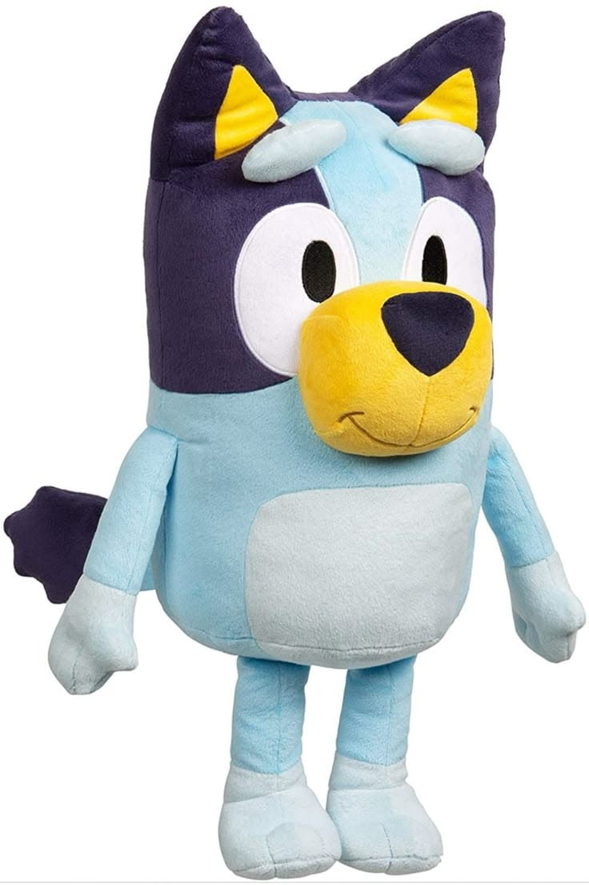

Es un peluche del personaje Bluey, una perrita de color azul claro con azul oscuro. Tiene orejas puntiagudas con interior amarillo, ojos grandes blancos con pupilas negras y un hocico amarillo brillante. Su cuerpo es suave y acolchonado, con pancita celeste más clara. Tiene brazos y piernas pequeñas, y una expresión tierna y amigable. Ideal para niños y fans de la serie.
$89.900 COP